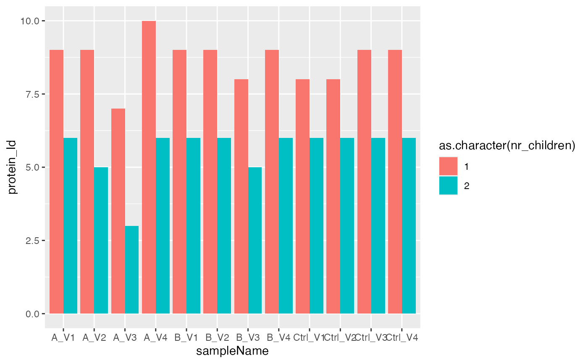

R/AnalysisConfiguration.R
hierarchy_counts_sample.RdCount distinct elements for each level of hierarchy per sample
hierarchy_counts_sample(pdata, configuration, nr_children = 1)data.frame
Other summary:
INTERNAL_FUNCTIONS_BY_FAMILY,
hierarchy_counts(),
nr_B_in_A_per_sample(),
summarize_hierarchy()
bb <- prolfqua::sim_lfq_data_peptide_config()
#> creating sampleName from fileName column
#> Warning: no nr_children column specified in the data, adding column nr_children and setting to 1.
#> completing cases
config <- bb$config
data <- bb$data
res <- hierarchy_counts_sample(data, config, nr_children = 1)
x <- res("long")
# filters on peptide level
res <- hierarchy_counts_sample(data, config, nr_children = 2)
x2 <- res("long")
# filters on protein level based on peptide count
bb <- prolfqua::sim_lfq_data_protein_config()
#> creating sampleName from fileName column
#> completing cases
res <- hierarchy_counts_sample(bb$data, bb$config, nr_children = 2)
x1 <- res()
res <- hierarchy_counts_sample(bb$data, bb$config, nr_children = 1)
x2 <- res()
x1$nr_children <- 2
x2$nr_children <- 1
xl <- dplyr::bind_rows(x1, x2)
xl$nr_children |> table()
#>
#> 1 2
#> 12 12
nudgeval <- -mean(xl$protein_Id) * 0.05
ggplot2::ggplot(xl, ggplot2::aes(x = sampleName, y = protein_Id, fill = as.character(nr_children)) ) +
ggplot2::geom_bar(stat = "identity", position = ggplot2::position_dodge())
